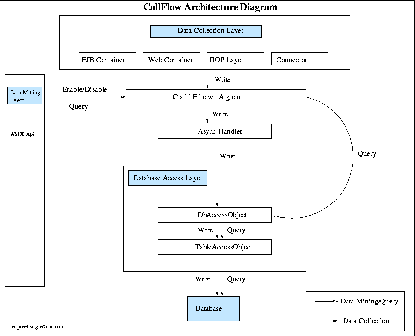

GlassFish now enables a application developer/server administrator monitor the behaviour of applications deployed in the appserver. A developer can use this feature at development time to see how the application behaves in the server. An administrator can use this feature to see the behaviour of applications in the server.
Monitor applications deployed on GlassFish. Collects runtime information about an application, like the user principal, transaction id, application name, method name, exceptions, time spent in various containers. Call is monitored as it flows through various containers in the appserver and through the user application code. For e.g: Consider a web app calling a ejb method foo. In this particular scenario, callflow will monitor information about a request as it came into the web container, it will monitor it information as it goes to web app service method, monitor the call going to the ejb container and finally to the ejb method foo.
Turned On and Turned Off explicitly via admin cli and admin gui. Turning on callflow, starts collecting data during runtime. This data is written to a database to be queried later on.
Query/Data Mining : Post collection of information, callflow is turned off and the data collected is mined to show user information about requests hitting the application. A user can look at a particular request to drill down to get more information like the callstack and time spent in various containers as well as the application code.
|
The majority of the GlassFish code is available under the Common Development and Distribution License (CDDL) v1.0 The following page contains details about the components in GlassFish and the licenses under which they are covered. |
Callflow is turned on via admin gui and admin cli. On turning on the server starts collecting monitoring information for the applications deployed in the appserver. Callflow is then turned off and admin gui is used to query the data collected.
Callflow data collection collects information like: transaction id, user principal, time in various containers, method name, application name, module name, exception etc. This information is persisted into a database.
Callflow query/data mining aspect, looks at this information and constructs the flow of a particular request through various containers in the appserver. It presents a call stack of this information. A user can look at this stack and graphically see the flow of the call and information like exceptions raised in application code etc. For each request a user can also view the times taken in various containers as well as the application code. A user can filter calls based on ip address and user principal.
An agent called the “CallFlow Agent” sits inside the core appserver container. This agent serves as the input point where all the callflow data is collected. Containers like EJB container, Web Container, IIOP Layer and Inbound connector calls make a call to the CallFlow agent to push information into the CallFlow layer.

The callflow implementation sits under the admin/monitor package. Database access is abstracted via a DbAccessObject class. Furthermore DbAccessObject hands all table accessing to the individual TableAccessObjects. Agent is the conduit between the admin-gui/admin-cli (i.e the front end – the datamining part) and the backend (i.e. The database access part). It also forms the conduit between the appserver containers (i.e. The data collection end) and the backend. AsyncHandler is a high performance async writer that collects data coming in from the various containers and writes them out asynchronously to the Database layer. The db layer itself performs batch updates to the database. The idea here is to write out the records as quickly and efficiently as possible.
Turn On/Off
Admin cli : asadmin start-callflow-monitoring [–filtertype type=value:type=value] instancename
e.g: asadmin start-callflow-monitoring server
e.g: asadmin start-callflow-monitoring –filtertype ip=129.129.129.129:user=john_doe server
Admin gui: configuration->monitoring->callflow . Image.
User can filter the type of requests he wants to monitor. Currently we provide 2 filters, one to monitor on ip addresses and the other to monitor on user principal.
Query Information
User can look at the information at the admin gui to look at the list of requests that hit the application server. (Image: TBD)
User can drill down a request to see more information about it. (Image: TBD)
Per commit procedures the Quicklook tests are required for all areas. In addition to the quicklook tests, we have two more sets of tests that we run.
Admin/monitor tests. These junit tests currently test the database access layer and individual TableAccessObjects. They test both the collection and query aspects of the database. There are about 30 tests in all and all should pass. To run the tests to connect to a standalone database, start derby database that comes along with the appserver (go to the quicklook directory and run ant startDerby) and then do maven compile-tests and maven run-tests.
Admin/mbeanapi-impl tests: These are AMX tests that test the entire featureset from the front end to the backend. You can do the following to just run the CallFlow specific tests. Copy amxtest.classes to myamxtest.classes. Remove all the lines from myamxtest.classes except com.sun.enterprise.management.monitor.CallFlowMonitorTest. Open amxtest.properties and modify the following properties amxtest.connect.useTLS=false , amxtest.testClasses=myamxtest.classes and amxtest.iterations=1. Do a maven run-tests. All the tests should pass here.
Include instructions on how to run the tests. For an example see the webtier page.
Callflow monitoring operates non-intrusively; that is, the runtime overhead is negligible. Whereas a profiler typically intrudes into and changes the timing characteristics of application threads.
Callflow monitoring implementation has an intimate relationship with the container, and so it is able to collect information such as application name, module name, component name, component type, transaction id, security principal, et cetera. Such information is not readily available to a profiler.
Callflow monitoring implementation collects the call flow data and stores them in a database. In a future release, this raw data may be accessed by third-party data mining tools, in order to slice and dice the data in infinite ways to project useful information in the form of graphs, pick up trends, et cetera.
Callflow monitoring provides the ability to monitor calls that originate specifically from a remote client and a user id. This allows selective monitoring of requests, without unnecessarily intruding into other parts of the runtime system. This is very useful while running large scale application services such as internet sites that support thousands of concurrent client.
{kind=link}